基礎題
1985 年，史梅利（Smalley）等三人利用雷射在高溫高壓下，激發石墨而發現 C60 的穩定分子，因而在 1996 年榮獲諾貝爾獎。C60 由 60 個碳原子組成，是極為對稱的球狀分子。在物質的分類上，C60 屬於下列何者？
- (A) 元素
- (B) 化合物
- (C) 溶液
- (D) 非均勻混合物
看答案與詳解
答案：(A)
下列何者為混合物？（多選）
- (A) 乾冰
- (B) 不銹鋼
- (C) 空氣
- (D) 黃銅
- (E) 廁所用的鹽酸
看答案與詳解
答案：(B)(C)(D)(E)
(B) ✔ 不銹鋼是鐵、鉻、鎳等的合金。
(C) ✔ 空氣含 N2、O2、Ar、CO2…。
(D) ✔ 黃銅是銅鋅合金。
(E) ✔ 鹽酸是 HCl 的水溶液。
下列何組物質中，兩者都是屬於化合物？
- (A) 臭氧、二氧化氮
- (B) 鑽石、黃銅
- (C) 葡萄糖、乾冰
- (D) 氨水、鹽酸
- (E) 白金、黃金
看答案與詳解
答案：(C)
農曆春節即將到來，許多人會在門口貼上春聯，有人竟然用元素符號寫了一幅有趣的春聯：上聯寫的是「Ag Zn Na F Ga Hf Mg」（迎新納福家和美），下聯為「Re Sg Tc Au As Sc Ti」（來喜得金身康泰），十分有趣。下面所列的物質何者屬於元素？
- (A) 乾冰
- (B) 白金
- (C) 甲醇
- (D) 黃銅
- (E) 以上皆非
看答案與詳解
答案：(B)
(B) ✔ 白金即鉑（Pt），元素。
(C) ✘ 甲醇 CH3OH，化合物。
(D) ✘ 黃銅是銅鋅合金，混合物。
下列哪些物質性質的描述，屬於物理性質？（多選）
- (A) 鈉為銀白色的物質
- (B) 金的延展性極佳
- (C) 氫為可燃性的物質
- (D) 汞為液態的物質
- (E) 硫酸具有強腐蝕性
看答案與詳解
答案：(A)(B)(D)
(A) ✔ 顏色是物理性質。
(B) ✔ 延展性是物理性質。
(C) ✘ 可燃性要「燒了才知道」，是化學性質。
(D) ✔ 狀態是物理性質。
(E) ✘ 腐蝕性是和其他物質反應的性質，屬化學性質。
下列何者為化學變化？（多選）
- (A) 藍色硫酸銅晶體經加熱後變成白色硫酸銅粉末
- (B) 金銀幣外上一層金箔
- (C) 銅與汞放在一起後形成銅汞齊
- (D) 米經發酵後產生米酒
- (E) 水與純酒精混合產生總體積變小的酒精溶液
看答案與詳解
答案：(A)(D)
(A) ✔ CuSO4．5H2O ⟶ CuSO4＋5H2O，結晶水脫去，物質改變，是化學變化。
(B) ✘ 只是包覆金箔，物理變化。
(C) ✘ 汞齊是金屬互相溶解形成的合金（混合物），視為物理變化。
(D) ✔ 發酵使澱粉、糖變成酒精，化學變化。
(E) ✘ 兩液體混合體積變小是分子間隙互相填補，沒有新物質，物理變化。
水受熱變成水蒸氣時，何者正確？
- (A) 分子本身體積變大
- (B) 分子質量變輕
- (C) 分子間的距離變大
- (D) 分子中的原子重新排列結合
看答案與詳解
答案：(C)
(A) ✘ 分子本身大小不變。(B) ✘ 質量不變。(C) ✔ 氣態分子間距離遠大於液態。(D) ✘ 原子重新排列是化學變化。
下列對於氣體基本性質的敘述，何者錯誤？
- (A) 氣體體積是指氣體粒子在容器內的運動範圍
- (B) 氣體粒子在容器內彼此碰撞
- (C) 氣體粒子的速率完全相同
- (D) 氣體擴散是從高濃度區域向低濃度區域移動
- (E) 密閉容器中氣體粒子擴散作用可使氣體物質均勻混合
看答案與詳解
答案：(C)
(C) ✘ 同溫下氣體粒子的速率有快有慢（呈一分布），並非完全相同 ⟶ 答案。
下列有關物質三態的比較，何者正確？
- (A) 粒子間距離：s＞l＞g
- (B) 粒子間束縛力：s＜l＜g
- (C) 粒子間排列整齊程度：s＜l＜g
- (D) 粒子自由移動程度：s＜l＜g
- (E) 形狀固定程度：s＜l＜g
看答案與詳解
答案：(D)
(A) ✘ 距離 s＜l≪g（一般物質）。(B) ✘ 束縛力 s＞l＞g。(C) ✘ 排列整齊 s＞l＞g。(D) ✔ 自由移動 s＜l＜g。(E) ✘ 形狀固定 s＞l＞g。
溫度升高時，酒精溫度計內的酒精柱會上升，從微觀角度分析，其原因是？
- (A) 酒精分子的體積變大
- (B) 酒精分子的數目增多
- (C) 酒精分子之間的距離增大
- (D) 酒精分子的運動減慢
- (E) 玻璃膨脹導致酒精被壓縮而往上升
看答案與詳解
答案：(C)
分子本身的大小、數目都不變，所以 (A)(B) ✘；(D) ✘ 運動是變快；(E) ✘ 玻璃膨脹容積變大，反而不會把酒精擠上去。故選 (C)。
已知水的三相圖如附圖，何者表示氣相與液相共存？
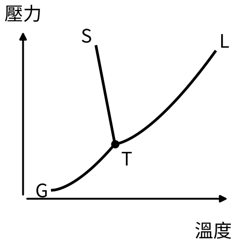
- (A) 線段 ST
- (B) STL 上方區域
- (C) STL 上方區域及 TL 以下區域
- (D) 線段 TL
- (E) 線段 GT
看答案與詳解
答案：(D)
TS：固液共存（熔化線）；TL：液氣共存（汽化曲線）；GT：固氣共存（昇華曲線）。
STL 上方是液態區，STL 左側是固態區，GTL 下方是氣態區。故氣、液共存為線段 TL，選 (D)。
下列有關物質的敘述，何者正確？
- (A) 石油與汽油皆為混合物
- (B) 鑽石有固定的熔沸點，是一種化合物
- (C) 具有沉澱食鹽的食鹽水是由食鹽和水組成的勻相混合物
- (D) 白銅是由銅與錫所形成的溶液
- (E) 氯化氫氣體是常見的混合物
看答案與詳解
答案：(A)
(B) ✘ 鑽石只含碳，是元素。
(C) ✘ 杯底有沉澱的食鹽，是非勻相混合物。
(D) ✘ 白銅是銅鎳合金（固態溶液）；銅錫合金是青銅。
(E) ✘ 氯化氫 HCl 是化合物。
下列關於元素與化合物的相關敘述，何者正確？
- (A) 純物質的組成與性質沒有固定
- (B) 由不同元素組成之物質必為混合物
- (C) 能以物理方法由混合物中分離出純物質
- (D) 能以化學方法再分解出其它物質，稱為元素
- (E) 外觀看來為單一相之均勻混合物又稱為溶液，具有一定的組成與性質。
看答案與詳解
答案：(C)
(B) ✘ 不同元素組成的也可能是化合物（如 H2O）。
(C) ✔ 混合物可用物理方法（過濾、蒸餾…）分離出純物質。
(D) ✘ 能以化學方法再分解的是化合物。
(E) ✘ 溶液是混合物，組成可變，性質不固定。
一瓶氣體經分析只含一種元素，則這瓶氣體是？（應選 2 項）（多選）
- (A) 必為混合物
- (B) 可能是純物質，也可能是混合物
- (C) 以元素態存在
- (D) 必為純物質
- (E) 可能以元素態存在，也可能以化合態存在
看答案與詳解
答案：(B)(C)
(A) ✘、(D) ✘ 不一定。
(B) ✔。
(C) ✔ 只含一種元素，必以元素態存在。
(E) ✘ 化合態至少要兩種元素。
下列有關固體、液體與氣體間的敘述，何者正確？
- (A) 科學上，固體是指晶形固體，因粒子排列比液體整齊，又稱為過冷的液體
- (B) 熔點的大小排列為：Cu＞H2O＞Ne
- (C) 氣體粒子間距離很大，彼此沒有任何作用力
- (D) H2O(s) 在室溫下變成 H2O(l)、NaCl(s) 加水變成 NaCl(aq) 均稱為熔化
- (E) 沸騰與蒸發皆是一種汽化現象，沉積又稱為昇華
看答案與詳解
答案：(B)
(B) ✔ 熔點 Cu 約 1085 ℃＞H2O 0 ℃＞Ne 約 −249 ℃。
(C) ✘ 氣體粒子間仍有微弱引力。
(D) ✘ NaCl 加水是溶解，不是熔化。
(E) ✘ 沉積（凝華）是氣⟶固，與昇華相反。
請問下列哪些物質之固態密度小於液態密度？（多選）
- (A) 水
- (B) 碘
- (C) 鉍
- (D) 銅
- (E) CO2
看答案與詳解
答案：(A)(C)
(A) ✔ 冰浮在水上。
(B) ✘ 碘。
(C) ✔ 鉍。
(D) ✘ 銅。
(E) ✘ CO2 熔化線右傾，固態密度較大。
進階題
物理變化前後，改變的是哪些？
- (A) 分子的種類
- (B) 分子的數目
- (C) 分子排列
- (D) 原子種類
- (E) 原子數目
看答案與詳解
答案：(C)
改變的只有分子的排列（或分子間距離），例如三態變化。故選 (C)。
下列各種現象中，何者屬於昇華？
- (A) 冷凍的衣服乾掉了
- (B) 舞台上的乾冰造成的白色煙霧
- (C) 酒精塗抹在皮膚上而感到涼快
- (D) 鎢絲燈泡內層沉積有一層黑色的鎢粉
- (E) 早晨的低溫，使樹葉上的露珠結成霜
看答案與詳解
答案：(A)
(A) ✔ 冷凍衣服上的冰直接變成水蒸氣，是昇華。
(B) ✘ 白霧是空氣中水蒸氣遇冷凝結成的小水滴（氣⟶液）。
(C) ✘ 酒精液體蒸發。
(D) ✘ 鎢蒸氣在玻璃上直接變回固體，是凝華（沉積）。
(E) ✘ 露珠（液）變霜（固）是凝固。
陷阱：乾冰白霧「不是」CO2，是水滴。
家裡的衣櫃常放些萘丸以防蟲害入侵。經過一段時間後，原來放進去的萘丸竟「不翼而飛」。試問下列哪種現象，其原理與上述相類似？（多選）
- (A) 放在開口容器的汽油，其量會逐漸減少
- (B) 在舞臺上放乾冰，經過一段時間後，體積逐漸減少
- (C) 酒精滴在皮膚後逐漸消失
- (D) 將冰箱取出玻璃杯，置於室溫一陣子，則杯外會有許多水滴，但經過一段時間後，這些小水滴會逐漸消失不見
- (E) 冷凍庫中製冰盒裡的冰塊，冰的愈久，冰塊會變的愈來愈小
看答案與詳解
答案：(B)(E)
(A) ✘ 汽油是液體蒸發。
(B) ✔ 乾冰昇華。
(C) ✘ 酒精蒸發。
(D) ✘ 水蒸氣凝結成水滴，再蒸發，都不是昇華。
(E) ✔ 冷凍庫低於 0 ℃，冰不會熔化，冰塊變小是冰直接昇華。
下列有關元素及化合物的概念與敘述，何者正確？（多選）
- (A) 固態物質甲受熱分解產生液態物質乙及氣體丙，則甲物質應該是元素
- (B) 在 (A) 的敘述中，物質乙與氣體丙一定都是化合物
- (C) 由固定的兩元素組成的不同化合物，其物理性質與化學性質可能不同
- (D) 分子是具有物質特性之最小單元粒子
- (E) 任何化合物都是由小分子組成，並具有物質的基本性質
看答案與詳解
答案：(C)(D)
(B) ✘ 乙、丙可能是元素（如 O2），不一定是化合物。
(C) ✔ 如 CO 與 CO2、H2O 與 H2O2，性質不同。
(D) ✔ 分子是保有物質特性的最小粒子（課本定義）。
(E) ✘ 離子化合物（如 NaCl）、網狀固體（如 SiO2）不是由分子組成。
下列有關元素及原子概念的敘述，請指出何者正確？ ①水銀是合金形態的化合物，氨水是均勻的混合物 ②由兩種相同元素組成的多種化合物，性質必定相同 ③純物質甲受熱分解產生純物質乙及氣體丙，則物質甲可能為化合物 ④真空容器中，置入元素甲並密閉加熱，經化學變化而得純物質乙，則甲與乙為同素異形體
- (A) 僅①、③正確
- (B) 僅②、③正確
- (C) 僅③、④正確
- (D) 僅①、③、④正確
- (E) 僅②、③、④正確
看答案與詳解
答案：(C)
② ✘ 如 CO 與 CO2，組成不同、性質不同。
③ ✔ 能分解成兩種物質，甲是化合物（「可能」也成立）。
④ ✔ 密閉容器內只有元素甲，化學變化後的純物質乙仍只含該元素 ⟶ 同素異形體（如白磷加熱變紅磷）。
正確為③④，選 (C)。
物質甲經過濾後，用燒杯收集得濾液乙，而在濾紙上留有黑色的固體丙，燒杯中的濾液經一段時間後，僅留存白色固體丁。將丁熔化後電解，在陰、陽兩極產生了不同的元素，丙無法再以化學方法分離出其他物質，而丁在熔化時的溫度持續微幅上升。依據以上的敘述，下列選項哪些正確？（應選 2 項）（多選）
- (A) 甲為溶液
- (B) 乙為化合物
- (C) 丙為沒有固定組成與性質
- (D) 丁為混合物
- (E) 乙可以物理方法再被分離
看答案與詳解
答案：(D)(E)
丙：無法再以化學方法分離 ⟶ 元素。
丁：熔化時溫度持續上升（沒有固定熔點）⟶ 混合物。
乙：濾液蒸發後留下丁 ⟶ 乙是溶液（混合物）。
甲：含不溶的固體丙 ⟶ 非勻相混合物。
(A) ✘ (B) ✘ (C) ✘ 元素有固定組成與性質。(D) ✔ (E) ✔ 乙可用蒸發（物理方法）分離。
根據下圖（二氧化碳的相圖），若將此物質壓力固定在 60 atm，將溫度由 −80 °C 升至 30 °C，則此物質的狀態將如何改變？
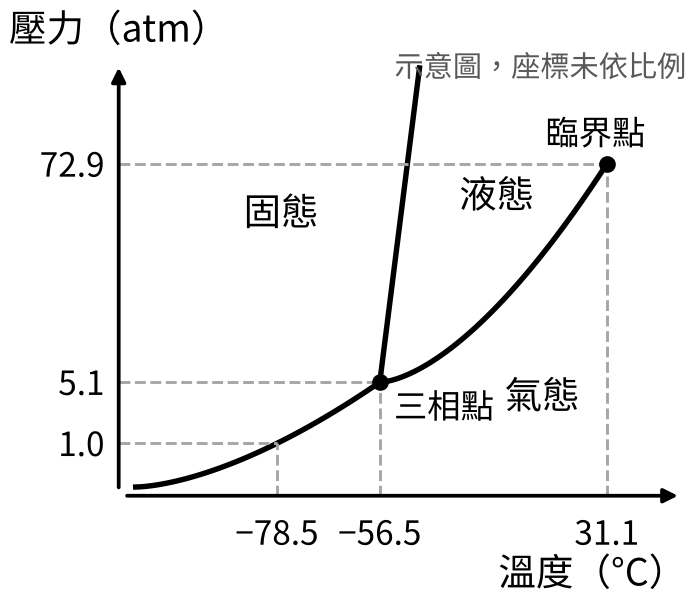
- (A) 固⟶氣
- (B) 固⟶液
- (C) 固⟶液⟶氣
- (D) 液⟶固⟶氣
- (E) 氣⟶液⟶固
看答案與詳解
答案：(C)
固定 60 atm（介於 5.1 與 72.9 之間），由 −80 ℃ 升溫：
① 先越過熔化線（約 −56 ℃ 稍右）⟶ 固⟶液；
② 再越過汽化曲線（60 atm 的沸點在 −56.5～31.1 ℃ 之間，約 20 多 ℃）⟶ 液⟶氣。
到 30 ℃ 時已是氣態，選 (C)。
右圖為純水（H2O）的相圖，依據相圖所提供的訊息，若將純水的溫度維持 0 °C，壓力自 10 大氣壓下降，直至 10−3 大氣壓。則在此過程中，純水的狀態改變情形為下列何者？
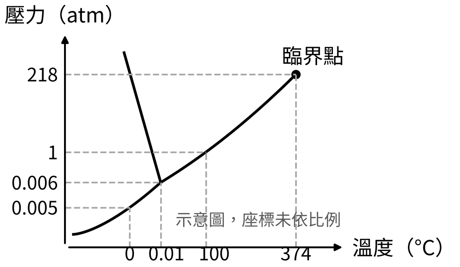
- (A) 固態⟶液態
- (B) 固態⟶氣態
- (C) 液態⟶氣態
- (D) 固態⟶液態⟶氣態
- (E) 液態⟶固態⟶氣態
看答案與詳解
答案：(E)
① 10 atm：水的熔化線向左傾（斜率為負），壓力大於 1 atm 時熔點低於 0 ℃，所以 0 ℃、10 atm 落在「液態」區。
② 壓力降到約 1 atm 以下，越過熔化線進入「固態」區。
③ 再降到 0.005 atm 以下（低於 0 ℃ 時的昇華曲線），進入「氣態」區。
故為 液態⟶固態⟶氣態，選 (E)。
陷阱：水的熔化線向左傾，加壓會使冰熔化。
附圖為水在定壓下的加熱曲線以及其三相圖，下列相關敘述何者不正確？
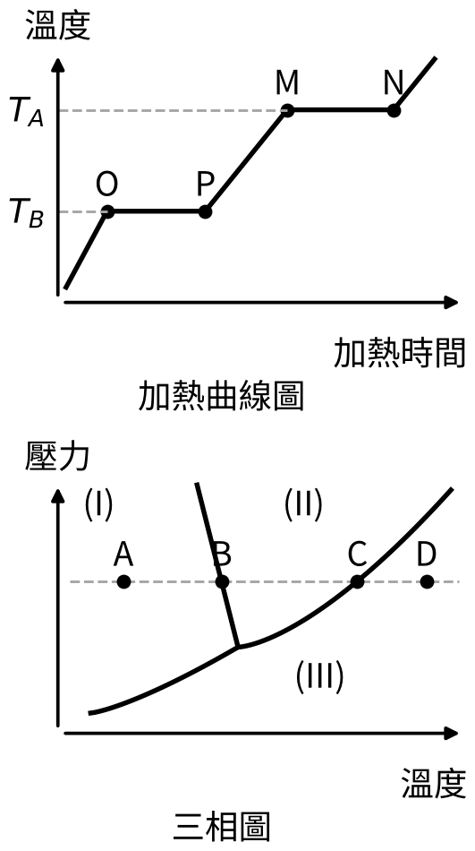
- (A) 加熱曲線圖中，MN 段液、氣兩相共存
- (B) 三相圖中，(I) 區為固體，(II) 區為氣體，(III) 區為液體
- (C) 三相圖中，B 點所代表的意義，相當於加熱曲線圖中的 OP 段
- (D) 從 (I) 區直接到 (III) 區的狀態變化，稱為昇華
- (E) 三相圖中，C 點的溫度相當於加熱曲線圖中的 TA
看答案與詳解
答案：(B)
(A) ✔ MN 為沸騰段，液、氣共存。
(B) ✘ (II) 是液體、(III) 是氣體，敘述顛倒 ⟶ 答案。
(C) ✔ B 點在固液界線上（熔點），對應 OP 段。
(D) ✔ 固體直接變氣體稱為昇華。
(E) ✔ C 點在液氣界線上（沸點），對應 TA。
某化合物的三相圖如右圖所示，則下列敘述，何者正確？
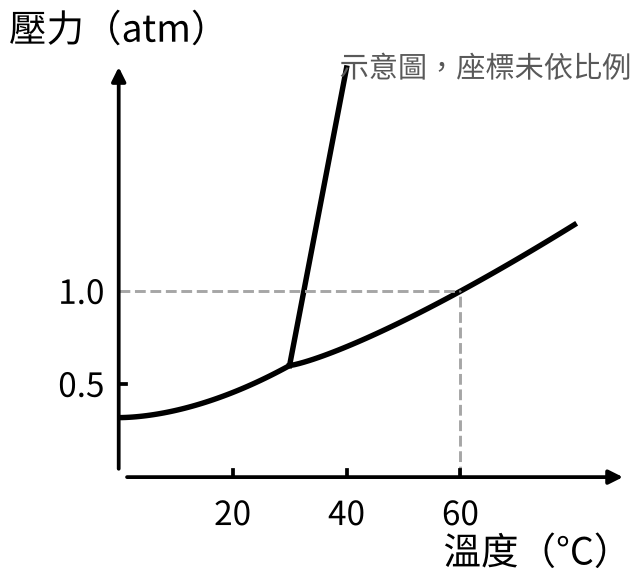
- (A) 50°C、1 atm 下，此物質為固態
- (B) 此物質由液態變為固態時，體積膨脹
- (C) 此物質之沸點隨壓力之增加而下降
- (D) 當壓力由 1.2 atm 降至 1 atm，沸點升高，凝固點降低
- (E) 當壓力為 0.5 atm 時，溫度由 0°C 升至 60°C，此物質將發生昇華現象
看答案與詳解
答案：(E)
(A) ✘ 1 atm 的熔點約 30 多 ℃，50 ℃ 為液態。
(B) ✘ 熔化線右傾 ⟶ 固態密度較大，液態凝固時體積縮小。
(C) ✘ 汽化曲線上升，沸點隨壓力增加而升高。
(D) ✘ 壓力降低，沸點降低、凝固點也略降。
(E) ✔ 0.5 atm 低於三相點壓力，由 0 ℃ 升溫直接由固態變氣態（昇華）。
某純物質，其相圖如圖所示：P，Q，R，S，T，U 六點的（溫度，壓力）坐標分別為：P（−5.4°C，0.5 atm），Q（10.0°C，100 atm），R（200°C，150 atm），S（−60°C，0.2 atm），T（50°C，1.00 atm），U（1.00°C，1.00 atm），則對於此純物質的下列各項敘述： (甲) 該物質的沸點隨著外壓的增加而增加 (乙) 該物質的凝固點隨外壓的增加而增加 (丙) 該物質在 1 atm 時可出現昇華現象 (丁) 該物質在液態時，飽和蒸氣壓隨溫度增加而增加 (戊) 在 1 atm 時，該物質的沸點高於水 以上敘述，哪些是正確？
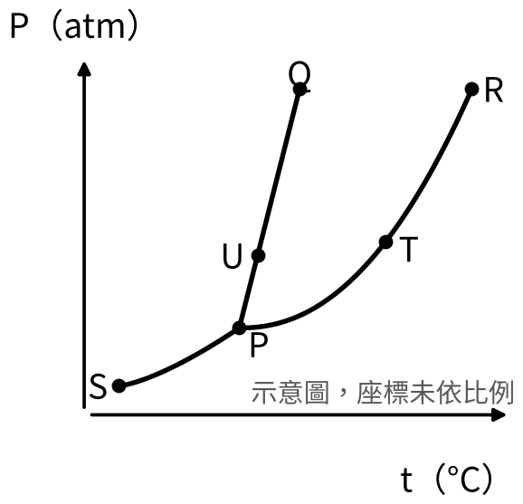
- (A) 甲，乙，丙，丁，戊
- (B) 僅有甲，丙，丁，戊
- (C) 僅有乙，丙，丁，戊
- (D) 僅有乙，丙，丁
- (E) 僅有甲，乙，丁
看答案與詳解
答案：(E)
甲 ✔ 汽化曲線右上升，沸點隨外壓增加而增加。
乙 ✔ 熔化線右傾：1 atm 凝固點 1.00 ℃（U）高於三相點 −5.4 ℃（0.5 atm）。
丙 ✘ 三相點壓力 0.5 atm＜1 atm，1 atm 下會出現液態，不會昇華。
丁 ✔ 液態的飽和蒸氣壓隨溫度增加而增加。
戊 ✘ T 點：1 atm 沸點 50 ℃，低於水的 100 ℃。
故選 (E)。
已知兩純物質 A 與 B 之相圖分別如圖一與圖二所示，縱座標均為壓力（單位為 atm），橫座標均為溫度（單位為 °C）且已知 T 為三相點，C 為臨界點。試根據圖形，判斷關於 A、B 兩物質之敘述，下列何者正確？
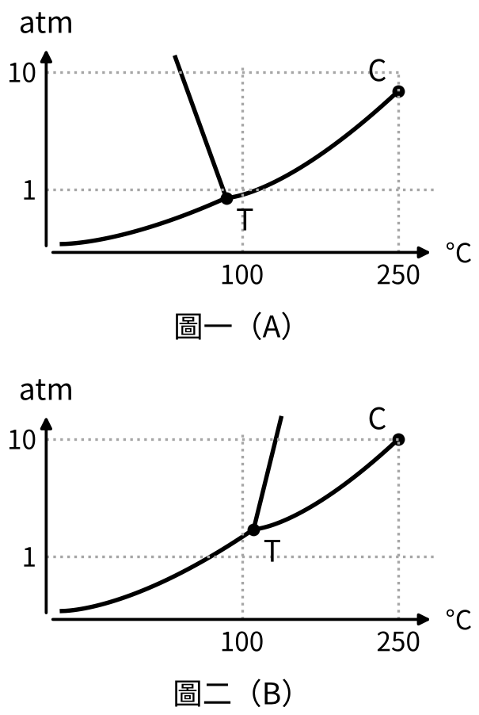
- (A) 兩者之沸點均隨壓力增大而提高
- (B) 兩者之熔點均隨壓力增大而降低
- (C) 兩者均可在常壓下發生昇華
- (D) 在 10 atm，250°C 時，兩者均為氣態
- (E) 在適當的壓力條件下，兩者均可在 100°C 時發生沸騰
看答案與詳解
答案：(A)
(B) ✘ A 的熔化線左傾（熔點隨壓力增大而降低），B 的熔化線右傾（熔點升高）。
(C) ✘ 常壓下昇華需三相點壓力＞1 atm：只有 B 可以，A 的三相點低於 1 atm。
(D) ✘ 10 atm、250 ℃：A 已超過臨界點（超臨界流體），B 恰在臨界點，都不是氣態。
(E) ✘ B 的三相點溫度高於 100 ℃，100 ℃ 時 B 沒有液態，不能沸騰。
二氧化碳（CO2）是空氣中常見的化合物之一，其應用範圍相當廣泛，如製造人造雨、保冷、除去咖啡中的咖啡因等。請根據下列二氧化碳的相圖判斷，有關 CO2 的敘述，哪些正確？（多選）
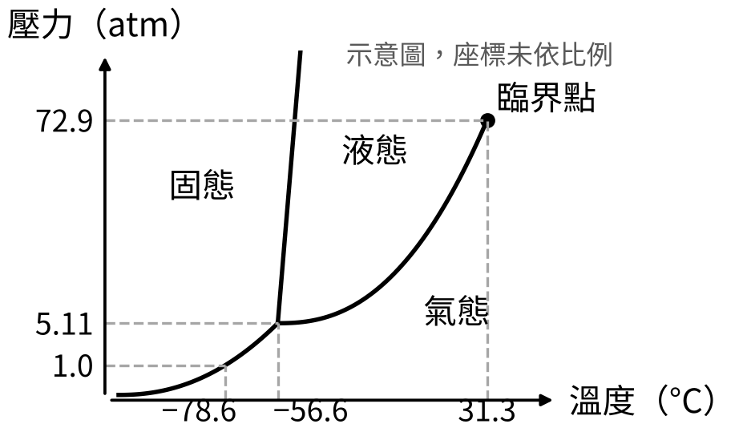
- (A) 在 1 atm、−85°C 時，CO2 為氣態，可注入飲料中製作氣泡飲料
- (B) 常壓下無法看到液態的二氧化碳
- (C) CO2 的熔點隨壓力上升而下降
- (D) CO2 由固態熔化為液態時，體積會膨脹
- (E) 在 73 atm、32°C 時，CO2 為液態，可用於除去咖啡中的咖啡因
看答案與詳解
答案：(B)(D)
(A) ✘ 1 atm、−85 ℃ 在昇華點以下，是固態（乾冰）。
(B) ✔ 1 atm 低於三相點壓力 5.11 atm，常壓下只有固、氣兩態，看不到液態。
(C) ✘ 熔化線向右傾，壓力愈大熔點愈高。
(D) ✔ 熔化線右傾 ⟶ 固態密度較大，熔化成液態時體積膨脹。
(E) ✘ 73 atm、32 ℃ 已同時超過臨界點，是超臨界流體，不是液態。
右圖為某物的三相圖，請問下述何者正確？（多選）
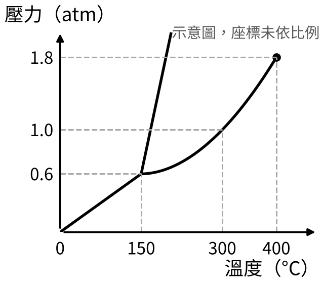
- (A) 此物在 1.0 atm、1000°C 下，稱為超臨界流體
- (B) 此物凝結時，密度將變小
- (C) 外壓自 1.0 atm 提升至 1.5 atm 時，此物的液態溫度範圍將變大
- (D) 在 300°C 下，自 0.3 atm 加壓至 1.5 atm，此物直接凝結而液化
- (E) 在 0.3 atm 下，自 300°C 降溫至 0°C，此物經歷先凝結、再凝固等兩過程而固化
看答案與詳解
答案：(C)(D)
(A) ✘ 1.0 atm 低於臨界壓力 1.8 atm，1000 ℃ 時是氣體，不是超臨界流體。
(B) ✘ 凝結（氣⟶液）密度變大。
(C) ✔ 加壓時沸點升高幅度大、熔點只略升，液態溫度範圍變大。
(D) ✔ 300 ℃ 時汽化曲線在 1.0 atm，0.3 atm 為氣態，加壓越過 1.0 atm 即凝結成液態。
(E) ✘ 0.3 atm 低於三相點壓力，降溫時由氣態直接凝華成固態。
大考／素養題
許多人喜歡在夏天到海邊戲水，也會在沙灘玩砂。試問在台灣沿海的沙灘隨意抓取的一把砂是屬於下列哪一類的物質？
- (A) 元素
- (B) 純物質
- (C) 化合物
- (D) 混合物
- (E) 聚合物
看答案與詳解
答案：(D)
下列哪一組元素符號依序為[硼、鈦、鉻、砷、氪]？
- (A) [Ba、Ti、Ca、Ar、Cr]
- (B) [Be、Ni、Cs、Sn、Cr]
- (C) [Br、Li、Cf、Am、K]
- (D) [B、Ti、Cr、As、Kr]
- (E) [B、Ni、Cr、As、K]
看答案與詳解
答案：(D)
易混：Ba 鋇、Be 鈹、Br 溴、Ca 鈣、Ar 氬、Ni 鎳、K 鉀。
下列哪一選項的廣告語最不科學？
- (A) 本牙膏含有氟，可預防蛀牙
- (B) 本飲料含有鹽，適合運動後飲用
- (C) 本飲料純由天然物質配製，不含化學物質
- (D) 本食鹽是特製品，含有碘，食用可預防甲狀腺腫大
- (E) 本礦泉水經衛生當局檢驗合格，含有少量礦物質，有益健康
看答案與詳解
答案：(C)
古詩詞是古人留給我們的寶貴精神財富，許多詩詞中包含許多科學領域的概念，像明代詩人于謙的〈石灰吟〉：「千錘萬鑿出深山，烈火焚燒若等閒。粉身碎骨全不怕，要留清白在人間。」此詩便是討論灰石、生石灰及熟石灰的變化過程，例如「烈火焚燒若等閒」即是描述灰石（碳酸鈣）在高溫下分解成生石灰（氧化鈣）的過程，請問下列文句中，何者涉及與「烈火焚燒若等閒」相同類型的物質變化？
- (A) 只要功夫深，鐵杵磨成針
- (B) 水聲冰下咽，沙路雪中平
- (C) 白玉為床，金作馬
- (D) 好雨知時節，當春乃發生
- (E) 人點燭，鬼吹燈，雞鳴燈滅不摸金
看答案與詳解
答案：(E)
(A) ✘ 鐵杵磨成針：只改變形狀，物理變化。
(B) ✘ 水結冰、下雪：狀態改變，物理變化。
(C) ✘ 白玉、黃金製成器物：物理變化。
(D) ✘ 春雨降下：水蒸氣凝結，物理變化。
(E) ✔ 點燭：蠟燭燃燒生成 CO2 與 H2O，化學變化。
實驗桌上有一杯蔗糖水溶液和一杯食鹽水溶液。下列實驗操作，何者不適合用來分辨這兩種溶液？
- (A) 測導電度
- (B) 比較焰色反應
- (C) 測 pH 值
- (D) 添加硝酸銀水溶液檢驗
看答案與詳解
答案：(C)
(B) 食鹽含鈉，焰色呈黃色，可分辨。
(C) 兩者都是中性（pH≈7），無法分辨 ⟶ 答案。
(D) 食鹽水含 Cl−，加 AgNO3 生成白色 AgCl 沉澱，可分辨。
市面上有所謂的健康低鈉鹽，下列有關低鈉鹽的敘述，何者最合理？
- (A) 低鈉鹽含有少量的金屬鈉，故稱為低鈉鹽
- (B) 低鈉鹽其實就是一般的氯化鈉鹽類，沒有什麼不同
- (C) 低鈉鹽中的鈉離子比氯離子少，所以不是電中性的
- (D) 低鈉鹽含有鉀離子，所以比相同莫耳數的氯化鈉含較少的鈉離子
看答案與詳解
答案：(D)
(A) ✘ 鹽中是 Na+，不是金屬鈉。(B) ✘ 含有 KCl，成分不同。(C) ✘ 正電荷由 Na+、K+ 共同提供，整體仍電中性。(D) ✔。
抖音神曲〈熱愛 105°C 的你〉中有一段歌詞：「熱愛 105 度的你，滴滴清純的蒸餾水」，依據歌名與歌詞內容可知歌詞中的你為 105°C 的蒸餾水。 請根據水的三相圖（附圖），若要得到 105°C 的蒸餾水，其壓力可能為多少？
- (A) 0.002 atm
- (B) 0.006 atm
- (C) 0.8 atm
- (D) 1 atm
- (E) 200 atm
看答案與詳解
答案：(E)
1 atm 時水的沸點是 100 ℃ ⟶ 105 ℃ 的蒸氣壓略大於 1 atm。
(A)～(D) 壓力 ≤ 1 atm：105 ℃ 已高於該壓力下的沸點，水為氣態 ✘。
(E) 200 atm：105 ℃ 落在液態區 ✔。
在奈米時代，溫度計也可奈米化。科學家發現：若將氧化鎵與石墨粉共熱，便可製得直徑 75 奈米、長達 6 微米的「奈米碳管」，管柱內並填有金屬鎵。鎵（Ga，熔點 29.8°C，沸點 2403°C）與許多元素（例如汞）相似，在液態時體積會隨溫度變化而冷縮熱脹。奈米碳管內鎵的長度會隨溫度增高而呈線性成長。在 310 K 時，高約 1.3 微米，溫度若升高到 710 K 時，高度則成長至 5.3 微米。根據本段敘述，回答下列問題： 若欲利用上述奈米溫度計測量使玻璃軟化的溫度（400～600°C）時，下列哪一元素最適合作為鎵的代替物？
- (A) Al（熔點 660°C，沸點 2467°C）
- (B) Ca（熔點 839°C，沸點 1484°C）
- (C) Hg（熔點 −38.8°C，沸點 356.6°C）
- (D) In（熔點 156°C，沸點 2080°C）
- (E) W（熔點 3410°C，沸點 5560°C）
看答案與詳解
答案：(D)
(A) Al、(B) Ca、(E) W 熔點太高，仍是固態 ✘。
(C) Hg 沸點 356.6 ℃，已汽化 ✘。
(D) In 熔點 156 ℃、沸點 2080 ℃ ✔。
網路上有一名俄羅斯籍的網紅 Katerina Didenko，為了慶祝生日炒熱派對氣氛，將事前準備好的 25 公斤乾冰倒入游泳池中，倒入的瞬間，泳池表面立刻湧出大量白色煙霧並瀰漫整個派對的空間，原先興致還很高昂的友人們完全被突如其來的白霧籠罩。此事故造成三人身亡、多人傷重送醫。事後檢調單位到現場調查，發現池面周圍仍有大量白色煙霧尚未散去。有關突如其來的白色煙霧，其成分與其敘述，下列何者正確？（應選 3 項）（多選）
- (A) 此白霧的成分於常溫常壓下為液態
- (B) 空氣中的水氣因迅降溫而凝結為水滴
- (C) 池水表面因快速沸騰而生成大量霧氣
- (D) 冰所進行相變化為昇華反應
- (E) 此白霧的成分於常溫常壓下具有可被壓縮性
看答案與詳解
答案：(A)(B)(D)
過程：乾冰（約 −78 ℃）昇華成大量冰冷的 CO2 ⟶ 周圍空氣急速降溫 ⟶ 空氣中的水蒸氣凝結成小水滴 ⟶ 白霧。
(A) ✔ 白霧成分是水，常溫常壓為液態。
(B) ✔ 水蒸氣遇冷凝結。
(C) ✘ 乾冰溫度極低，池水沒有沸騰。
(D) ✔ 乾冰在 1 atm 直接由固態變氣態，是昇華。
(E) ✘ 水滴是液體，幾乎不可壓縮。
補充：致命原因是大量 CO2（比空氣重）積在池面，使人窒息。
代號為 X、Y、Z 的三種化合物，在某條件下均能分解，各產生兩種產物，而其中有一物質是相同的，如式中的 W，反應式如下（反應條件未註明）：X⟶W＋P、Y⟶W＋Q、Z⟶W＋R。已知：(1)P 為一種鹽，其水溶液與 AgNO3(aq) 反應，產生白色沉澱。(2)Q 為只由一種元素構成的可燃氣體。(3)元素 R 在常溫常壓為液體，能從 AgNO3(aq) 中，置換出 Ag(s)。試依據上列反應式，推論下列哪些敘述正確？（應選二項）（多選）
- (A) P 是 AgCl(s)
- (B) Q 是 O2(g)
- (C) R 是 Hg(l)
- (D) Y 是 H2O(l)
- (E) Z 是 KBr(s)
看答案與詳解
答案：(C)(D)
X：KClO3 ⟶ O2＋KCl；Y：H2O ⟶ O2＋H2；Z：HgO ⟶ O2＋Hg。
(A) ✘ AgCl 難溶，不會再和 AgNO3 產生沉澱；P 是 KCl。
(B) ✘ O2 助燃不可燃，Q 是 H2。
(C) ✔ R 是 Hg。
(D) ✔ Y 是 H2O。
(E) ✘ KBr 分解得不到能置換 Ag 的液態元素，Z 是 HgO。
在低溫高壓的狀態下，甲烷的氣體分子被水分子包覆，形成類似冰晶的化合物，稱為甲烷水合物。附圖是甲烷水合物的相圖，依此，下列敘述哪些正確？（應選 2 項）（多選）
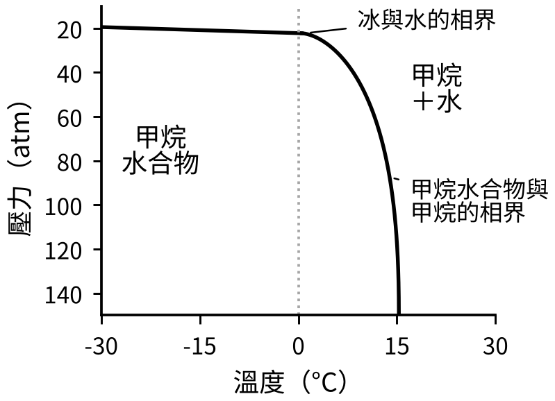
- (A) 甲烷水合物點燃時，發生燃燒反應的應為甲烷氣體
- (B) 甲烷氣體與水不會同時存在
- (C) 在 0℃、140 大氣壓時，甲烷水合物與冰同時存在
- (D) 在 −15℃ 時，不會有甲烷水合物的存在
- (E) 在 0℃、10 大氣壓時，不會有甲烷水合物的存在
看答案與詳解
答案：(A)(E)
(A) ✔ 水合物受熱釋出甲烷，燃燒的是甲烷氣體（水不可燃）。
(B) ✘ 右下方區域就是甲烷氣體與水同時存在。
(C) ✘ 0 ℃、140 atm 落在甲烷水合物區，只有水合物，沒有冰。
(D) ✘ −15 ℃ 時，壓力高於約 20 atm 就有甲烷水合物。
(E) ✔ 0 ℃ 時相界約在 22 atm，10 atm 低於相界，不會形成甲烷水合物。
附圖為硫的相變圖，甲、乙、丙、丁表示硫的四種不同狀態，依次為斜方硫、單斜硫、液態硫、氣態硫。有關硫的相變圖之敘述，下列哪些正確？（多選）
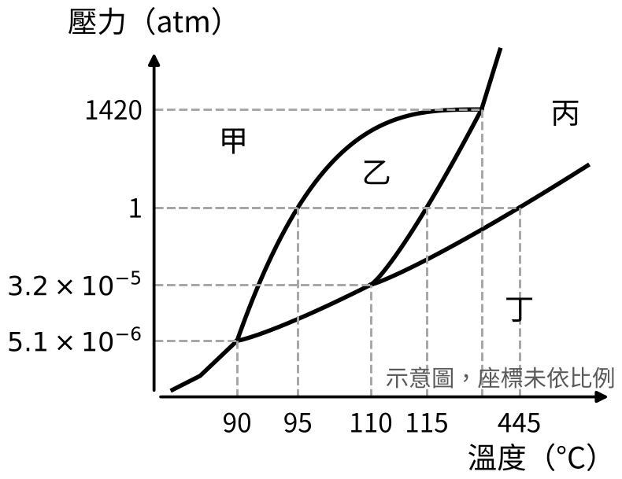
- (A) 斜方硫的正常熔點 115 °C
- (B) 在 1 atm、25 °C，將斜方硫加熱，變化過程為甲⟶乙⟶丁
- (C) 硫的正常沸點 445 °C
- (D) 1 atm 下，將液態硫緩緩傾倒在沸水中會得斜方硫
- (E) 100 °C 下，將氣態硫加壓到 1420 atm 可得斜方硫
看答案與詳解
答案：(C)(E)
(A) ✘ 1 atm 時斜方硫在 95 ℃ 先轉成單斜硫，115 ℃ 是單斜硫的熔點。
(B) ✘ 過程為甲⟶乙⟶丙⟶丁，中間有液態。
(C) ✔ 1 atm 下丙⟶丁在 445 ℃。
(D) ✘ 100 ℃、1 atm 落在 95～115 ℃ 之間的乙區，得單斜硫。
(E) ✔ 100 ℃ 由低壓（氣態）加壓到 1420 atm，已在甲乙界線上方的甲區，得斜方硫。
下列物質：①水銀、②柴油、③黃銅、④蔗糖、⑤臭氧、⑥藥用雙氧水、⑦乾冰、⑧白金、⑨鹽酸、⑩CuSO4．5H2O、⑪18K 金。試回答下列問題：
(1) 哪些為元素？（2 分，全對才給分）
(2) 哪些為化合物？（2 分，全對才給分）
(3) 哪些為混合物？（2 分，全對才給分）
看答案與詳解
答案：(1) ①⑤⑧ (2) ④⑦⑩ (3) ②③⑥⑨⑪
(2) 化合物：④蔗糖 C12H22O11、⑦乾冰 CO2、⑩CuSO4．5H2O（結晶水是化學式的一部分，組成固定）。
(3) 混合物：②柴油（多種烴類）、③黃銅（銅鋅合金）、⑥藥用雙氧水（約 3％ H2O2 水溶液）、⑨鹽酸（HCl 水溶液）、⑪18K 金（含金 75％ 的合金）。
易錯：白金是元素鉑，18K 金才是合金；臭氧雖是分子仍屬元素。